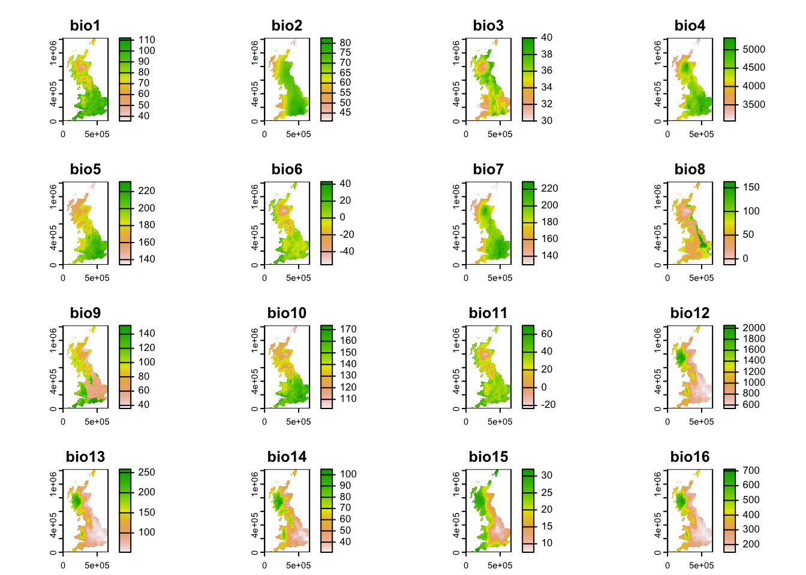
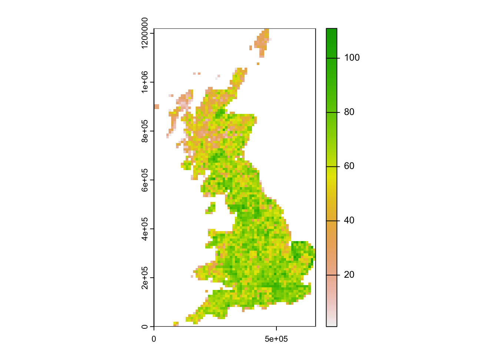

Species richness gradients
RStudio project
Open the RStudio project that we created in the first session. I recommend to use this RStudio project for the entire course and within the RStudio project create separate R scripts for each session.
- Create a new empty R script by going to the tab “File”, select “New File” and then “R script”
- In the new R script, type
# Session a2: Species richness gradientsand save the file in your folder “scripts” within your project folder, e.g. as “a2_RichnessGradients.R”
Today, we will explore species richness gradients in UK breeding birds. We will map species richness, explore the latitudinal species richness gradient, and the species-energy relationships.
1 Breeding bird richness
1.1 Distribution data
All analyses of today will be based on a dataset of British breeding and wintering birds recently made available by Gillings et al. (2019). The original data contain breeding bird records in 20-year cycles (1968-1972, 1988-1991, 2008-2011) and wintering bird records in 30-year cycles (1981/1982-1983-1984, 2007/2008-2010/2011) at a 10 km spatial resolution throughout Britain, Ireland, the Isle of Man and the Channel Islands. Some rarer species are represented at 20 or 50 km resolutions. Here, we will concentrate on bird records from Britain at 10 km resolution during the breeding seasons 2008-2011. The original data are available through the British Trust of Ornithology (www.bto.org; direct download here). To simplify matters, I have already filtered the data to contain only the relevant breeding records. These cleaned data are available here. Please download the data and save them in an appropriate folder (e.g. in data folder).
We can now read in the data into R.
# Read in the distribution dataset:
bird_dist <- read.table('data/UK_BBatlas_2008.csv',header=T, sep=',', stringsAsFactors = F)Let’s take a first look at the data and find out what information is contained in there.
str(bird_dist, list.len=10)## 'data.frame': 2833 obs. of 230 variables:
## $ grid : chr "HP40" "HP50" "HP51" "HP60" ...
## $ EASTING : int 445000 455000 455000 465000 465000 395000 395000 415000 415000 415000 ...
## $ NORTHING : int 1205000 1205000 1215000 1205000 1215000 1135000 1145000 1145000 1155000 1165000 ...
## $ Gavia_stellata : int 0 1 1 1 1 1 1 0 1 1 ...
## $ Gavia_arctica : int 0 0 0 0 0 0 0 0 0 0 ...
## $ Tachybaptus_ruficollis : int 0 0 0 0 0 0 0 0 0 0 ...
## $ Podiceps_cristatus : int 0 0 0 0 0 0 0 0 0 0 ...
## $ Podiceps_nigricollis : int 0 0 0 0 0 0 0 0 0 0 ...
## $ Fulmarus_glacialis : int 1 1 1 1 1 1 1 0 1 1 ...
## $ Puffinus_puffinus : int 0 0 0 0 0 0 0 0 0 0 ...
## [list output truncated]The data frame contains 230 columns of which the first three columns describe the grid reference and coordinates. The coordinates are provided in the British National Grid, with grid letters and grid digits. The British National Grid is based on a transverse Mercator projection, and the grid letters and grid digits can easily be converted into the so-called Easting and Northing coordinates. All other columns contain presence and absence data of 227 bird species for the breeding seasons 2008-2011. The data contain only species presences with probable or confirmed breeding. The column names are the latin species names.
Let’s plot the spatial distribution of the Willow ptargmigan
(Lagopus lagopus). As the data are provided for all grid cells
in Britain without any holes, we can use the convenient
rast()function in theterra` package for
converting the data frame into raster data.
library(terra)
# The coordinate reference system for the UK National Grid is:
proj_UK <- '+proj=tmerc +lat_0=49 +lon_0=-2 +k=0.9996012717 +x_0=400000 +y_0=-100000 +ellps=airy +datum=OSGB36 +units=m +no_defs'
r_ptarmigan <- terra::rast(bird_dist[,c('EASTING','NORTHING','Lagopus_lagopus')], crs=proj_UK, type = "xyz")
plot(r_ptarmigan)1.2 Species richness patterns
Now, we map the species richness of breeding birds in Britain. As you
have seen, the data frame contains presence and absence records for all
breeding bird species for each 10 km cell in Britain. We can use the
function rowSums() to sum up the number of bird species
present at any location (in each row). But be careful to only sum up the
columns containing species records, not the columns containing
coordinates.
richness <- data.frame(bird_dist[,2:3], richness = rowSums(bird_dist[,-c(1:3)]))
head(richness)## EASTING NORTHING richness
## 1 445000 1205000 12
## 2 455000 1205000 41
## 3 455000 1215000 25
## 4 465000 1205000 36
## 5 465000 1215000 47
## 6 395000 1135000 43Again, we can use the rast()` function from above to
convert this new data frame into a raster object and map this.
r_richness <- terra::rast(richness, crs = proj_UK, type = "xyz")
plot(r_richness)How is bird species richness distributed in Britain?
1.3 Task 2: Latitudinal species richness gradient
As was discussed in the Macroecology lecture, we can analyse different aspects of spatial patterns in species richness (Gaston 2000). First, we plot the latitudinal species richness gradient. For simplicity, we use the Northing coordinates provided in the data frame rather than longitude. The smoothing line gives a first indication whether there are any strong trends.
library(ggplot2)
ggplot(data = richness, mapping = aes(x = NORTHING, y = richness)) +
geom_point() +
geom_smooth(method="loess") +
xlab('Latitude (UK NORTHING)') +
ylab('Species richness')
Compare your latitudinal richness gradient with Gaston (2000) and discuss.
1.4 Species-energy relationships
Gaston (2000) also presented species-energy relationship, for example the relationship between species richness and annual temperature. For this, we need to join the species richness data with climatic data. For convenience, I have already processed worldclim data (19 bioclimatic variables) for you such that the raster stack is projected in the British National Grid at 10 km spatial resolution. You can download the raster stack data here. Please save it in your data folder and unzip it. We can then load the raster data in R:
clim <- terra::rast('data/UK_bioclim.grd')
plot(clim)
To plot the relationship between species richness and summer temperature, we have to extract the climate data for all cells in Britain and join these with the species richness data.
Look up the definition of the bioclimatic variables again. Which one is summer temperature?
# Extract climate data and join with richness data frame
richness2 <- cbind(richness, terra::extract(clim, richness[,1:2]))
# Plot species richness against summer temperature
ggplot(data = richness2, mapping = aes(x = bio10/10, y = richness)) +
geom_point() +
geom_smooth(method="loess") +
xlab('Summer temperature [°C]') +
ylab('Species richness')Dont’ forget to save the species-climate data frame for later:
save(richness2,file='data/UK_bird_richness_clim.RData')Compare this species-energy relationship with Gaston (2000) and discuss.
2 More richness patterns
As mentioned at the beginning of this practical, distribution data of UK breeding birds are available for different decades. Again, I have already processed the data and you can download them here. Place the data into your data folder.
# Read in the distribution dataset:
bird_dist2 <- read.table('data/UK_BBatlas_1968_2008.csv',header=T, sep=',', stringsAsFactors = F)
# Look at data, the first three columns contain coordinate information, the 4th column contains the time periods:
head(bird_dist2[,1:20])## grid EASTING NORTHING period Gavia_stellata Gavia_arctica
## 1 HP40 445000 1205000 1968-72 1 0
## 2 HP40 445000 1205000 1988-91 1 0
## 3 HP40 445000 1205000 2008-11 0 0
## 4 HP50 455000 1205000 1988-91 1 0
## 5 HP50 455000 1205000 2008-11 1 0
## 6 HP50 455000 1205000 1968-72 1 0
## Tachybaptus_ruficollis Podiceps_cristatus Podiceps_nigricollis
## 1 0 0 0
## 2 0 0 0
## 3 0 0 0
## 4 0 0 0
## 5 0 0 0
## 6 0 0 0
## Fulmarus_glacialis Puffinus_puffinus Hydrobates_pelagicus
## 1 1 0 0
## 2 1 0 0
## 3 1 0 1
## 4 1 0 0
## 5 1 0 0
## 6 1 0 0
## Oceanodroma_leucorhoa Morus_bassanus Phalacrocorax_carbo
## 1 0 0 0
## 2 0 0 0
## 3 1 0 0
## 4 0 0 0
## 5 0 0 0
## 6 0 0 0
## Phalacrocorax_aristotelis Botaurus_stellaris Ixobrychus_minutus
## 1 1 0 0
## 2 1 0 0
## 3 1 0 0
## 4 1 0 0
## 5 1 0 0
## 6 1 0 0
## Egretta_garzetta Ardea_cinerea
## 1 0 0
## 2 0 0
## 3 0 0
## 4 0 0
## 5 0 0
## 6 0 0# Species names are contained in the remaining columns:
spp <- names(bird_dist2)[-c(1:4)]
spp_names <- sub('_',' ',spp)Again, we can calculate species richness by simply summing up each row. However, we need to take care to use the correct years.
First, I would like to analyse how species richness has changed between different time periods. For this, we first need to compute species richness per time period, for example:
# Which time periods are contained in the data?
unique(bird_dist2$period)## [1] "1968-72" "1988-91" "2008-11"# Extract species occurrences per time period and compute species richness:
birds_68 <- subset(bird_dist2,period=='1968-72')
birds_68$richness68 <- rowSums(birds_68[,spp])
# Convert to raster data and map:
plot(terra::rast(birds_68[,c('EASTING','NORTHING','richness68')], crs=proj_UK, type = "xyz"))
Exercise:
- Calculate species richness for all time periods and map them. The
maps below are done by first creating a multi-layer SpatRaster object
´dist_maps´ with
c()and then using the code below. Of course, you can also plot the maps separately. - Plot the latitudinal species richness gradients for at least one other time period.
- Plot species richness against annual precipitation sum. Compare with Gaston (2000) and discuss.
UK breeding bird richness mapped for all time periods:
library(tidyterra)
# Make a SpatRaster object "dist_maps" containing the species richness layers for the three time periods
# Map the species richness maps for the 3 time periods:
ggplot() +
geom_spatraster(data = dist_maps) +
facet_wrap(~lyr, ncol = 3) +
scale_fill_whitebox_c(
palette = "muted"
) +
labs(fill = "Richness")Latitudinal species richness gradient in UK breeding birds across different time periods:

Species-energy relationship of UK breeding birds across different time periods: